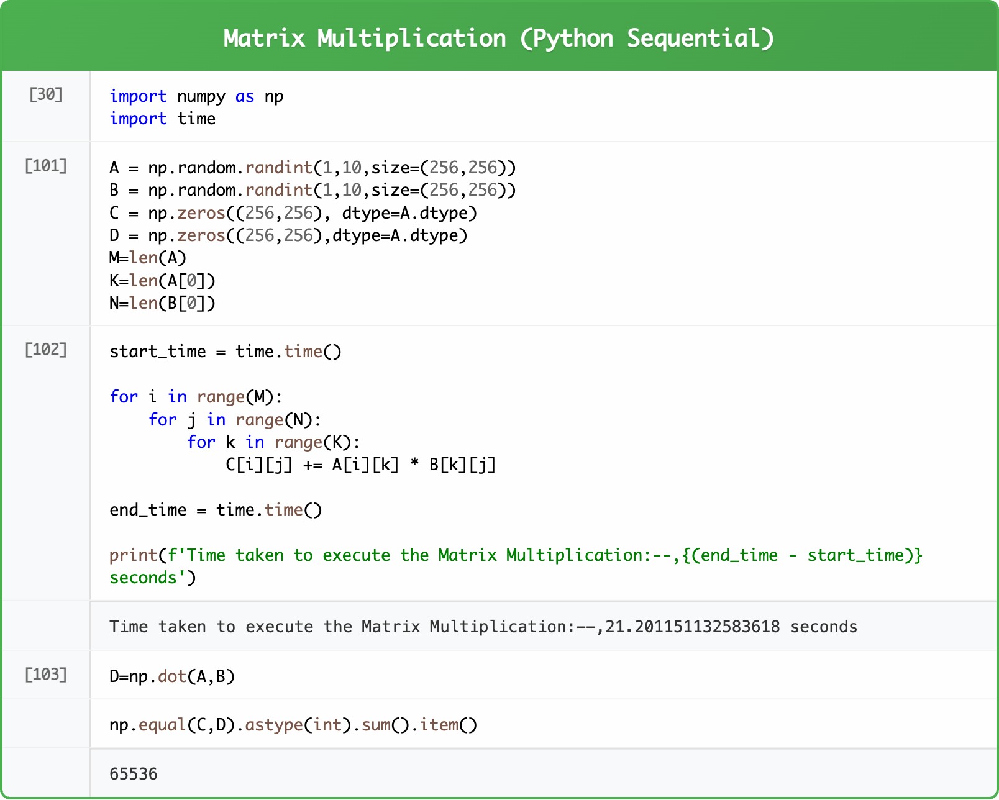

GPU Programming & GEMM Optimization · 50 min read
Understanding CUDA GEMM: Foundations for Optimization
On this page
- Matrix Multiplication
- The Computational Challenge
- The Naive Sequential Approach (CPU)
- The Parallelization Opportunity
- Naive CUDA Kernel
- Configurations for Kernel Launch
- Kernel & GPU Configurations:
- Naive GEMM
- Memory Access Patterns and Coalescing Analysis:
- Access Pattern Analysis for Warp-0:
- Cache Reality vs. Reuse Potential:
- Naive GEMM Code Walkthrough
- TILE GEMM
- Recap: Naive GEMM Limitations
- Moving Forward: Shared Memory as the Solution
- CUDA Programming Constraints - Ampere Architecture
- Tiling Strategy Options for 256×256 Matrices
- Tiling Strategy Options
- Tile Size
- Tiling Step by Step
- Visualizations (TILE GEMM)
- Visualizations (Thread Block of TILE)
- TILE GEMM Code
- TILE GEMM - Code Walkthrough
- Data Reuse Analysis: Naive GEMM vs Tile GEMM
- Understanding the Naive GEMM Configuration
- Data Reuse Analysis
- Naive GEMM - Cache Eviction Problems
- Tiled GEMM Solution:
- Performance Analysis
- A100 Specifications
- Peak FLOPS Calculation
- Peak Memory Bandwidth Calculation
- Peak Arithmetic Intensity
- Arithemetic Intensity :
- Warp and Register Tiling
- Warp Tiling: Cooperative Thread Organization
- Inner Product vs Outer Product
- Warp Shuffling Process:
- Visualizations - Warp Shuffling
- Register Tiling
- GEMM Implementation Challenges: Why CUTLASS and cuBLAS Matter
- Profiling Pytorch
- Optimizations Beyond Tiling
- Summary
- References
In our previous blog, we explored GPU computing fundamentals: memory hierarchies, thread organization, warps, memory coalescing, and kernel classification (memory-bound vs. compute-bound).
In this blog, we apply these concepts to optimize GEMM (General Matrix Multiply) operations. We'll implement progressively faster versions,understanding each optimization technique.
All visualizations & images in this post were generated using Claude to enhance understanding of GPU architecture and memory patterns.
Matrix Multiplication
Matrix multiplication, as we know it has O(N³) time complexity, which is not acceptable at the scale of modern AI. Consider this: a single attention mechanism in a tranformer architecture (large language model) involves massive matrix operations, with numerous matrix multiplications across every layer. If these core operations aren't efficient, even high-performance inference engines like vLLM ,SGLang and NVIDIA Triton cannot deliver optimal results—despite sophisticated optimizations like KV Cache, Prefill, and Speculative Decoding.
The Computational Challenge
Let’s examine a concrete example. Consider multiplying two matrices: A (256×256) and B (256×256), resulting in matrix C (256×256).
To calculate any element C(i,j), we need to compute the dot product of row i from matrix A with column j from matrix B. For C(0,0), we multiply the first row of A with the first column of B and sum the results:
$$C[i][j] = \sum_{k}A[i][k] * B[k][j]$$
C(0,0) = A(0,0)*B(0,0) + A(0,1)*B(1,0) + ... + A(0,255)*B(255,0 )
This requires 256 multiply-add operations. Since our result matrix has 256×256 = 65,536 elements, and each requires 256 operations, we need a total of 16,777,216 FMA (Fused Multiply-Add) operations.
The Naive Sequential Approach (CPU)
The most straightforward implementation uses three nested loops: This sequential approach calculates elements one by one: C(0,0) → C(0,1) → … → C(255,255). On a modern CPU, this might take several seconds, which is unacceptable for real-time inference.

The Parallelization Opportunity
Knowing how matrix multiplication works, we are certain that each element of the result matrix C can be calculated independently. Computing C(255,255) doesn't depend on any previous calculations of matrix C. This independence is the foundation for parallelization.
Theoretically, we could spawn 65,536 threads—one for each result element. Thread-0 calculates C(0,0), Thread-1 calculates C(0,1), and so on. If we could execute all threads simultaneously, our computation time would be determined by the maximum time to perform 256 FMA operations rather than 8+ million—a theoretical 32,768× speedup.
However, as we learned in Part 1 about GPU architecture, there are practical limitations on the number of execution units and memory resources (shared memory, registers, etc.). These constraints shape how we design our GEMM kernels and lead us towards optimization strategies that balance parallelism with resource utilization.
Analogy: A manufacturing plant producing cars requires skilled technicians to assemble parts. Technicians need parts and tools to assemble them into a single unit (a car).
Naive CUDA Kernel
Configurations for Kernel Launch
Grid and dimensional block configurations can be set using different combinations. The general convention for grid configuration is as follows. For this example, we are considering the configuration blockDim(32,32):
gridDim((N+blockDim.x-1)/blockDim.x, (N+blockDim.y-1)/blockDim.y))
Kernel & GPU Configurations:
- GPU: A100
- Max Streaming Multiprocessors (SM): 108
- Max Warps per SM → 64
- Max Threads per Thread Block → 1024
- Max Thread per SM → 2048
- blockDim: (32,32) → (x,y)
- gridDim: (9,9) → (N+blockDim.x-1)/blockDim.x, (N+blockDim.y-1)/blockDim.y
- L1 Cache → 32 KB (Considering that total memory Sharable between L1 Cache (Hardware Cache)+ Shared Memory(Software Cache) is 192 KB)
Naive GEMM


Memory Access Patterns and Coalescing Analysis:
When executing the line below, data must be loaded from matrices A and B following the A100’s memory hierarchy:
acc += A[row*K + k] B[k * N + col]
The system searches through each level sequentially:
- Shared Memory (up to 164KB per SM, shared across all threads in a thread block)
- L1 Cache (28KB per SM when shared memory is maximized, shared across thread blocks)
- L2 Cache (40MB shared across all 108 SMs)
- HBM2 (slowest memory, 1.6TB/s bandwidth)
- Memory Transaction Fundamentals: When loading data (e.g., A[row*K+k]), the memory subsystem doesn’t load just 4 bytes. Instead, it loads 128 bytes from consecutive memory locations in a single transaction. For optimal performance, threads in a warp should access consecutive memory locations. This is where memory coalescing becomes crucial—proper coalescing allows multiple threads to utilize a single 128-byte transaction, avoiding additional round trips to global memory.
Access Pattern Analysis for Warp-0:
- Matrix A Access: The first warp, iterating through the K dimension across all iterations, accesses elements A[0] through A[255], totaling 256 elements × 4 bytes = 1KB of data. During each iteration, all threads in the warp access the same element of Matrix A, resulting in a broadcast pattern where one value is distributed to all 32 threads.
- Matrix B Access: All 32 threads access consecutive elements B[0] through B[31] during the first iteration. Across 256 iterations along the K dimension, this represents 256 × 32 elements × 4 bytes = 32KB of data. Since each thread in the warp accesses consecutive memory locations, this achieves proper memory coalescing.
Cache Reality vs. Reuse Potential:
Although we are able to achieve coalescing memory access for Matrix B, we still have constraints on GPU resources limiting our potential to achieve optimal performance for GEMM.
In A100 GPU Architecture, total memory available for Shared Memory + L1 Cache is 192KB, with a maximum of 164KB allocatable to shared memory, leaving 28KB for L1 cache.
From our calculations for Warp-0, we know that this warp alone requires 33KB of data (1KB for Matrix A + 32KB for Matrix B). Since a thread block contains 32 warps, and multiple thread blocks may be scheduled on the same SM (sharing L1 cache), cache pressure becomes significant. This leads to frequent cache evictions, forcing us towards inefficient memory transactions to global memory.
Data Reuse Opportunities and Cache Limitations:
- Each element A[i,k] should theoretically be reused across multiple output calculations. For example, A[0][k] values are needed by all warps calculating row 0 outputs across different columns.
- Each element B[k,j] should be reused across multiple row calculations. For instance, B[k][0] is needed by multiple thread blocks calculating different rows of the same column.
Cache Reality: With only 28KB L1 cache available and 33KB+ data requirements per warp, most data gets evicted before it can be reused. When Warp-1 needs the same A[0][k] elements that Warp-0 just used, these elements are likely already evicted from cache, forcing expensive global memory accesses.
Code:
#include <stdio.h>
#include <stdlib.h>
#include <time.h>
#include <cuda_runtime.h>
__global__ void gemm_kernel(float* A, float* B, float* C, int M, int N, int K) {
int row = blockIdx.y * blockDim.y + threadIdx.y;
int col = blockIdx.x * blockDim.x + threadIdx.x;
if (row < M && col < N) {
float sum = 0.0f;
for (int k = 0; k < K; k++) {
sum += A[row * K + k] * B[k * N + col];
}
C[row * N + col] = sum;
}
}
void generateRandomMatrix(float* matrix, int rows, int cols, float min, float max) {
for (int i = 0; i < rows * cols; i++) {
float range = max - min;
matrix[i] = ((float)rand() / RAND_MAX) * range + min;
}
}
int main() {
int M = 256, N = 256, K = 256;
size_t size_A = M * K * sizeof(float);
size_t size_B = K * N * sizeof(float);
size_t size_C = M * N * sizeof(float);
printf("Matrix dimensions: A(%dx%d) * B(%dx%d) = C(%dx%d)\n", M, K, K, N, M, N);
// Host matrices
float *h_A = (float*)malloc(size_A);
float *h_B = (float*)malloc(size_B);
// Device matrices
float *d_A, *d_B, *d_C;
cudaMalloc(&d_A, size_A);
cudaMalloc(&d_B, size_B);
cudaMalloc(&d_C, size_C);
// Generate random matrices
printf("Generating random matrices...\n");
srand(time(NULL));
generateRandomMatrix(h_A, M, K, 1.0f, 10.0f);
generateRandomMatrix(h_B, K, N, 1.0f, 10.0f);
// Copy to device
printf("Copying matrices to GPU...\n");
cudaMemcpy(d_A, h_A, size_A, cudaMemcpyHostToDevice);
cudaMemcpy(d_B, h_B, size_B, cudaMemcpyHostToDevice);
// Setup kernel launch parameters
dim3 block(32, 32);
dim3 grid((N + block.x - 1) / block.x, (M + block.y - 1) / block.y);
// Create timing events
cudaEvent_t start, stop;
cudaEventCreate(&start);
cudaEventCreate(&stop);
gemm_kernel<<>>(d_A, d_B, d_C, M, N, K);
cudaDeviceSynchronize();
// Calculate Time Taken
printf("Running GEMM kernel...\n");
cudaEventRecord(start);
gemm_kernel<<>>(d_A, d_B, d_C, M, N, K);
cudaEventRecord(stop);
cudaEventSynchronize(stop);
float milliseconds = 0;
cudaEventElapsedTime(&milliseconds, start, stop);
// Calculate performance
long long ops = 2LL * M * N * K;
double gflops = (ops / (milliseconds / 1000.0f)) / 1e9;
printf("\n=== GEMM Performance Results ===\n");
printf("Kernel execution time: %.3f ms\n", milliseconds);
printf("Operations: %lld\n", ops);
printf("Performance: %.2f GFLOPS\n", gflops);
// Cleanup
free(h_A); free(h_B);
cudaFree(d_A); cudaFree(d_B); cudaFree(d_C);
cudaEventDestroy(start);
cudaEventDestroy(stop);
return 0;
}
Naive GEMM Code Walkthrough
CUDA Progamming comprises of below steps on High level
| Step | Action | Code/Function | Notes |
|------|---------------------------------|------------------------------------------------------ |-------------------------------------------------------|
| 1 | Declare Variables on Host(CPU) | `int *h_A = (int *)malloc(size);` | standard C/C++ memory allocation |
| 2 | Declare Device Variables | `int *d_A;` | Only declare pointers here |
| 3 | Allocate Device Memory | `cudaMalloc((void**)&d_A, size);` | Allocates memory on GPU |
| 4 | Copy Host → Device | `cudaMemcpy(d_A, h_A, size, cudaMemcpyHostToDevice);` | Copy input data from CPU to GPU |
| 5 | Launch Kernel | `Kernel<<<gridDim, blockDim>>>(...);` | Configure grid/block dimensions |
| | | `cudaDeviceSynchronize();` | Wait until kernel execution completes |
| 6 | Copy Device → Host | `cudaMemcpy(h_C, d_C, size, cudaMemcpyDeviceToHost);` | Copy kernel execution result from GPU to CPU |
| 7 | Free Memory | `cudaFree(d_A); free(h_A);` | Clean memory block allocated, to avoid memory leaks |
- main() method : Allocates Memory, Transfers data from CPU to GPU, Launch Kernel with Gird & Thread Block configuration
- generateRandomMatrix() method : Generates Random matrices for input data
- gemm_kernel method(): Core Kernel Logic

TILE GEMM
Recap: Naive GEMM Limitations
When discussing naive GEMM implementation in our earlier section, we found that even with optimal memory access patterns—broadcast reads for Matrix A and coalesced reads for Matrix B—the performance was significantly constrained, reaching only about 2% of the theoretical peak memory bandwidth.
The primary issue was inadequate data reuse due to cache capacity limitations. Although our (32,32) block configuration facilitated efficient warp-level memory patterns, frequent cache evictions led to repeated global memory accesses for the same data elements. This resulted in a memory-bound kernel that was unable to fully leverage the GPU’s computational resources.
Moving Forward: Shared Memory as the Solution
To overcome these limitations of naive GEMM, we need explicit control over data locality and reuse. The L1 cache, being a hardware-managed cache controlled by the execution framework, provides no guarantee that data brought into cache will remain available for subsequent transactions.
Shared memory, managed by the programmer and often called a “software cache,” provides a solution by allowing programmers to control data movement explicitly. Once data is loaded into shared memory, it is guaranteed to remain available until either overwritten by the program or the kernel execution completes.
However, it is not possible to bring all matrix data into shared memory simultaneously. To understand why, let us examine the key limitations that prevent this approach
CUDA Programming Constraints - Ampere Architecture
Understanding memory and thread limitations when developing CUDA applications for matrix operations.
The matrix requires 256 KB but only 164 KB is available per block, creating a significant constraint for large matrix operations.
The matrix requires 256 KB but only 164 KB is available per block, creating a significant constraint for large matrix operations.
The huge gap between required threads (65,536) and available threads per block (1,024) necessitates careful work distribution across multiple thread blocks.
Tiling Strategy Options for 256×256 Matrices
These constraints reveal that while matrix A cannot fit entirely into one thread block’s shared memory, it can be split into smaller sub-matrices (tiles) that do fit. This approach forms the foundation of Tile GEMM, where matrices are divided into manageable tiles that individual thread blocks can process effectively using shared memory. The tiling strategy is designed from the output matrix’s (C) perspective.
Tiling Strategy Options
Several tiling strategies can be used to partition the 256×256 matrices into smaller sub-matrices. The tile size significantly impacts both memory usage and thread utilization, so it must be chosen carefully to achieve optimal performance. However, we can't use all tile sizes due to GPU constraints. For example, a 64×64 tile requires 4,096 threads per block, but the maximum threads per block is 1,024. This constraints eliminates larger tile sizes such as 128×128 and 64×64, for our example we'll use a 32×32 tile size.
Tile Size
Matrix Size: 256 × 256 = 65,536 elements For tile size T×T: Number of tiles = (256/T)²
- 128×128 tiles: (256/128)² = 2² = 4 tiles
- 64×64 tiles: (256/64)² = 4² = 16 tiles
- 32×32 tiles: (256/32)² = 8² = 64 tiles
- 16×16 tiles: (256/16)² = 16² = 256 tiles
- 8×8 tiles: (256/8)² = 32² = 1,024 tiles
- 4×4 tiles: (256/4)² = 64² = 4096 tiles
| Tile Size | Elements per Tile | Memory/Tile | Threads Required |
|---|---|---|---|
| 128 × 128 | 16384 (128 × 128) | 64 KB | 16384 |
| 64 × 64 | 4096 ( 64 × 64) | 16 KB | 4096 |
| 32 × 32 | 1024 (32 × 32) | 4 KB | 1024 |
| 16 × 16 | 256 (16 × 16) | 1 KB | 256 |
| 8 × 8 | 64 (8 × 8) | 256 B | 64 |
| 4 × 4 | 16 (4 × 4) | 64 B | 16 |
Tiling Step by Step
For our example of 256×256 matrix, we are splitting the large matrix into tiles (sub-matrices) of size 32×32, this leads to the following configuration:
- Total tiles
64 tiles (8×8 grid), with each tile calculated by one thread block
2. Tile size
Each thread block computes one 32×32 tile, totaling 1,024 elements
3. Thread allocation
Each thread block uses 1,024 threads (one thread per tile element)
4. Warp organization
Each thread block contains 32 warps 1,024 ÷ 32 = 32 warps
5. Memory footprint
Each thread block loads 32×32 elements = 4 KB per matrix (float32 precision)
6. Dependencies
To calculate one tile C(0,0), it requires 8 tiles from matrix A (row 0) and 8 tiles from matrix B (column 0)
7. Loading strategy
Tiles from A and B are cooperatively loaded by warps into the thread block's shared memory
8. Sequential processing
Tiles of A and B are loaded in 8 sequential phases as described below
The tiling approach enables efficient use of shared memory by loading small, manageable chunks of data that fit within memory constraints while maximizing thread utilization and computational efficiency.
We’ll examine how Thread Block (0,0) processes these tiles through the 8 sequential phases to compute C(0,0) using shared memory optimization.
Full Grid : Below visualizations represents the 64 tiles A & B of collective output of all 64 thread blocks C(0,0) to C(7,7) yields the final 256×256 matrix containing 65,536 elements.

Visualizations (TILE GEMM)

Thread Block Layout(Tiles)
The interactive visualizations above illustrate how matrices are divided into tiles for efficient CUDA processing. Now let's zoom into a single tile to understand how it's computed by a thread block.
Our original configuration used a 256 × 256 matrix divided into 64 tiles of size 32 × 32, with each tile processed by a 32 × 32 thread block. However, visualizing a 32×32 thread block (1,024 threads) would be too cluttered for clear understanding.
To better demonstrate the thread block computation pattern, we'll use an adjusted configuration that maintains the same computational principles while being more visually manageable:
Adjusted Configuration:
- Matrix Size: 64 × 64
- Tile Size: 8 × 8
- Number of Tiles: 64
- Grid Size: 8 × 8
- Thread Block Dimensions: 8 × 8
Visualizations (Thread Block of TILE)

TILE GEMM Code
#include <stdio.h>
#include <stdlib.h>
#include <time.h>
#include <cuda_runtime.h>
#define TILE_SIZE 32
__global__ void tiled_gemm_kernel(float* A, float* B, float* C, int M, int N, int K) {
// Shared memory for tiles
__shared__ float A_tile[TILE_SIZE][TILE_SIZE];
__shared__ float B_tile[TILE_SIZE][TILE_SIZE];
// Thread indices
int tx = threadIdx.x;
int ty = threadIdx.y;
// Global indices for the output matrix C
int row = blockIdx.y * TILE_SIZE + ty;
int col = blockIdx.x * TILE_SIZE + tx;
float sum = 0.0f;
// Loop over tiles
for (int tile = 0; tile < (K + TILE_SIZE - 1) / TILE_SIZE; tile++) {
// Load tile from matrix A into shared memory
int A_row = row;
int A_col = tile * TILE_SIZE + tx;
if (A_row < M && A_col < K) {
A_tile[ty][tx] = A[A_row * K + A_col];
} else {
A_tile[ty][tx] = 0.0f;
}
// Load tile from matrix B into shared memory
int B_row = tile * TILE_SIZE + ty;
int B_col = col;
if (B_row < K && B_col < N) {
B_tile[ty][tx] = B[B_row * N + B_col];
} else {
B_tile[ty][tx] = 0.0f;
}
// Synchronize to ensure all threads have loaded their data
__syncthreads();
// Compute partial dot product for this tile
for (int k = 0; k < TILE_SIZE; k++) {
sum += A_tile[ty][k] * B_tile[k][tx];
}
// Synchronize before loading next tile
__syncthreads();
}
// Write result to global memory
if (row < M && col < N) {
C[row * N + col] = sum;
}
}
// Simple GEMM kernel for comparison
__global__ void simple_gemm_kernel(float* A, float* B, float* C, int M, int N, int K) {
int row = blockIdx.y * blockDim.y + threadIdx.y;
int col = blockIdx.x * blockDim.x + threadIdx.x;
if (row < M && col < N) {
float sum = 0.0f;
for (int k = 0; k < K; k++) {
sum += A[row * K + k] * B[k * N + col];
}
C[row * N + col] = sum;
}
}
void generateRandomMatrix(float* matrix, int rows, int cols, float min, float max) {
for (int i = 0; i < rows * cols; i++) {
float range = max - min;
matrix[i] = ((float)rand() / RAND_MAX) * range + min;
}
}
void printMatrix(float* matrix, int rows, int cols, const char* name) {
printf("\n%s (%dx%d):\n", name, rows, cols);
for (int i = 0; i < rows && i < 8; i++) {
for (int j = 0; j < cols && j < 8; j++) {
printf("%.2f ", matrix[i * cols + j]);
}
if (cols > 8) printf("...");
printf("\n");
}
if (rows > 8) printf("...\n");
}
bool verifyResults(float* C1, float* C2, int M, int N, float tolerance = 1e-3f) {
for (int i = 0; i < M * N; i++) {
if (fabs(C1[i] - C2[i]) > tolerance) {
printf("Mismatch at index %d: %.6f vs %.6f\n", i, C1[i], C2[i]);
return false;
}
}
return true;
}
int main() {
// Matrix dimensions - should be multiples of TILE_SIZE for best performance
int M = 256, N = 256, K = 256;
size_t size_A = M * K * sizeof(float);
size_t size_B = K * N * sizeof(float);
size_t size_C = M * N * sizeof(float);
printf("=== Tiled GEMM with %dx%d Tiles ===\n", TILE_SIZE, TILE_SIZE);
printf("Matrix dimensions: A(%dx%d) * B(%dx%d) = C(%dx%d)\n", M, K, K, N, M, N);
printf("Memory usage: A=%.1fMB, B=%.1fMB, C=%.1fMB\n",
size_A/1e6, size_B/1e6, size_C/1e6);
// Host matrices
float *h_A = (float*)malloc(size_A);
float *h_B = (float*)malloc(size_B);
float *h_C_tiled = (float*)malloc(size_C);
float *h_C_simple = (float*)malloc(size_C);
// Device matrices
float *d_A, *d_B, *d_C;
cudaMalloc(&d_A, size_A);
cudaMalloc(&d_B, size_B);
cudaMalloc(&d_C, size_C);
// Generate random matrices
printf("\nGenerating random matrices...\n");
srand(time(NULL));
generateRandomMatrix(h_A, M, K, 1.0f, 10.0f);
generateRandomMatrix(h_B, K, N, 1.0f, 10.0f);
// Print sample of input matrices
printMatrix(h_A, M, K, "Matrix A (sample)");
printMatrix(h_B, K, N, "Matrix B (sample)");
// Copy to device
printf("\nCopying matrices to GPU...\n");
cudaMemcpy(d_A, h_A, size_A, cudaMemcpyHostToDevice);
cudaMemcpy(d_B, h_B, size_B, cudaMemcpyHostToDevice);
// Create timing events
cudaEvent_t start, stop;
cudaEventCreate(&start);
cudaEventCreate(&stop);
// === TILED GEMM ===
printf("\n=== Running Tiled GEMM ===\n");
// Grid and block dimensions for tiled GEMM
dim3 block_tiled(TILE_SIZE, TILE_SIZE);
dim3 grid_tiled((N + TILE_SIZE - 1) / TILE_SIZE, (M + TILE_SIZE - 1) / TILE_SIZE);
printf("Tiled kernel config: Grid(%d,%d), Block(%d,%d)\n",
grid_tiled.x, grid_tiled.y, block_tiled.x, block_tiled.y);
// Time tiled GEMM
cudaEventRecord(start);
tiled_gemm_kernel<<<grid_tiled, block_tiled>>>(d_A, d_B, d_C, M, N, K);
cudaEventRecord(stop);
cudaEventSynchronize(stop);
float tiled_time = 0;
cudaEventElapsedTime(&tiled_time, start, stop);
// Copy result back
cudaMemcpy(h_C_tiled, d_C, size_C, cudaMemcpyDeviceToHost);
// === SIMPLE GEMM (for comparison) ===
printf("\n=== Running Simple GEMM for Comparison ===\n");
// Grid and block dimensions for simple GEMM
dim3 block_simple(32, 32);
dim3 grid_simple((N + block_simple.x - 1) / block_simple.x,
(M + block_simple.y - 1) / block_simple.y);
printf("Simple kernel config: Grid(%d,%d), Block(%d,%d)\n",
grid_simple.x, grid_simple.y, block_simple.x, block_simple.y);
// Time simple GEMM
cudaEventRecord(start);
simple_gemm_kernel<<<grid_simple, block_simple>>>(d_A, d_B, d_C, M, N, K);
cudaEventRecord(stop);
cudaEventSynchronize(stop);
float simple_time = 0;
cudaEventElapsedTime(&simple_time, start, stop);
// Copy result back
cudaMemcpy(h_C_simple, d_C, size_C, cudaMemcpyDeviceToHost);
// === RESULTS ===
printf("\n=== Performance Results ===\n");
long long ops = 2LL * M * N * K;
double tiled_gflops = (ops / (tiled_time / 1000.0f)) / 1e9;
double simple_gflops = (ops / (simple_time / 1000.0f)) / 1e9;
printf("Tiled GEMM: %.3f ms, %.2f GFLOPS\n", tiled_time, tiled_gflops);
printf("Simple GEMM: %.3f ms, %.2f GFLOPS\n", simple_time, simple_gflops);
printf("Speedup: %.2fx\n", simple_time / tiled_time);
// Verify correctness
printf("\n=== Verification ===\n");
bool correct = verifyResults(h_C_tiled, h_C_simple, M, N);
printf("Results match: %s\n", correct ? "✓ YES" : "✗ NO");
// Print sample of output
printMatrix(h_C_tiled, M, N, "Result Matrix C (sample)");
// Memory bandwidth analysis
double mem_ops = (size_A + size_B + size_C) / (1024.0 * 1024.0 * 1024.0); // GB
double tiled_bandwidth = mem_ops / (tiled_time / 1000.0);
double simple_bandwidth = mem_ops / (simple_time / 1000.0);
printf("\n=== Memory Bandwidth ===\n");
printf("Data transferred: %.2f GB\n", mem_ops);
printf("Tiled bandwidth: %.1f GB/s\n", tiled_bandwidth);
printf("Simple bandwidth: %.1f GB/s\n", simple_bandwidth);
// Cleanup
free(h_A); free(h_B); free(h_C_tiled); free(h_C_simple);
cudaFree(d_A); cudaFree(d_B); cudaFree(d_C);
cudaEventDestroy(start);
cudaEventDestroy(stop);
printf("\n=== Program Complete ===\n");
return 0;
}
TILE GEMM - Code Walkthrough
Like mentioned earlier the CUDA Program Follows steps mentioned below ,
| Step | Action | Code/Function Used | Notes |
|------|---------------------------------|------------------------------------------------------ |-------------------------------------------------------|
| 1 | Declare Variables on Host(CPU) | `int *h_A = (int *)malloc(size);` | standard C/C++ memory allocation |
| 2 | Declare Device Variables | `int *d_A;` | Only declare pointers here |
| 3 | Allocate Device Memory | `cudaMalloc((void**)&d_A, size);` | Allocates memory on GPU |
| 4 | Copy Host → Device | `cudaMemcpy(d_A, h_A, size, cudaMemcpyHostToDevice);` | Copy input data from CPU to GPU |
| 5 | Launch Kernel | `Kernel<<<gridDim, blockDim>>>(...);` | Configure grid/block dimensions |
| | | `cudaDeviceSynchronize();` | Wait until kernel execution completes |
| 6 | Copy Device → Host | `cudaMemcpy(h_C, d_C, size, cudaMemcpyDeviceToHost);` | Copy kernel execution result from GPU to CPU |
| 7 | Free Memory | `cudaFree(d_A); free(h_A);` | Clean memory block allocated, to avoid memory leaks |
- main() : Allocates Memory, Transfers data from CPU to GPU, Define Gird & Block configuration, Launch Kernel, Copy from GPU to CPU.
- generateRandomMatrix() method : Generates Random matrices for input data
- tiled_gemm_kernel(): Kernel to calculate Tiled GEMM
- simple_gemm_kernel(): Kernel to calculate Naive GEMM
- printMatrix() & verifyResults() - Utility functions
The process of Allocating Memory on CPU for Input & Output matrices, Fill the matrices with random numbers, Copy matrices to Memory allocated on GPU , Launch Kernels (Simple & Tiled).
Kernel Logic for Simple or Naive GEMM remains same , hence we will solely focus on Tiled GEMM Kernel

Data Reuse Analysis: Naive GEMM vs Tile GEMM
Let us examine how tiling solves the data reuse inefficiencies that arise in naive GEMM cache evictions.
Configuration Recap:
Naive GEMM: Grid of 1,024 thread blocks (8×8 grid), each thread block containing 1,024 threads (32×32), with no shared memory usage.
Tiled GEMM: Grid of 64 thread blocks (8×8 grid), each thread block containing 1,024 threads (32×32), using 32×32 tiles with shared memory for matrices A and B.
Understanding the Naive GEMM Configuration
In naive GEMM, our configuration comprised:
- Grid: 64 thread blocks arranged in an 8×8 layout
- Thread Block: 1,024 threads arranged in a 32×32 layout
- Warps per Block: 32 warps (1,024 threads ÷ 32 threads per warp)
- Work per Warp: Each warp calculates 32 consecutive elements in the output matrix
This configuration meant that each thread block computed a 32×32 tile of the output matrix C, with threads directly reading from global memory without caching data in shared memory.
Data Reuse Analysis
Naive GEMM Limitations:
To calculate adjacent output elements C(0,0) and C(0,1), both require the entire first row of matrix A. While this row is loaded once from global memory for C(0,0), cache evictions prevent reuse for C(0,1), forcing redundant global memory accesses.
Similarly, to calculate C(0,0) and C(1,0) we need the first column of B matrix i.e B(0,0) => B(0,31).While calculating C(0,0), this entire column is fetched from global memory. However due to cache evictions, this same data cannot be reused when calculating C(1,0). Let's examine the memory access pattern in Warp-0 to understand the problem.
Memory Access per Thread Block(Naive)
- Load Row-0 from Matrix A: 256 × 4 bytes = 1 KB
- Load Columns 0-31 from Matrix B: 256 × 32 × 4 bytes = 32 KB
Data Loading from Global Memory
- Matrix A: 1 row = 256 elements × 4 bytes = 1,024 bytes
- Matrix B: 1 column = 256 elements × 4 bytes = 1,024 bytes
- Total: 2,048 bytes
Operations Performed:
256 multiply operations + 256 add operations = 512 FLOPs
Arithmetic Intensity:
512 FLOPs ÷ 2,048 bytes = 0.25 FLOPS/Byte
Problem: Matrix B columns cannot be reused across computations due to cache evictions
Naive GEMM - Cache Eviction Problems
- Step 1 - Load A[0] row = 1 KB → L1 Cache
- Step 2 - Load B[0:31] columns =32 KB ( 1 Column = 256 × 4 Bytes = 1KB => 32 Columns = 32 × 1 KB) → L1 Cache
- Step 3 - Compute C[0,0] to C[0,31]
- Cache Eviction , L1 Cache (32 KB)
- Relod B[0:31] for next cycle of computation i.e C[1,0] to C[0,31]
- The process of evictions & Reload continues for all 255 iterations
Tiled GEMM Solution:
Data Loading from Global Memory:
- Load 32×32 tile from Matrix A into shared memory: 32 × 32 × 4 bytes * 8 Tiles = 32 KB
- Load 32×32 tile from Matrix B into shared memory: 32 × 32 × 4 bytes * 8 Tiles = 32 KB
- Total: 64 KB = 65,536 bytes
Operations Performed:
32×32 threads × 512 operations each = 524,288 FLOPs
Arithmetic Intensity:
524,288FLOPs ÷ 65,536 bytes = 8.0 FLOPS/Byte
The improvement comes from data reuse within shared memory. In tiled GEMM, each byte loaded from global memory is reused multiple times across different computations, while in naive GEMM, each byte is used only once before being potentially evicted from cache.
Performance Analysis
To understand a kernel's performance and limitations, we compare it against the roofline model. The roofline model is a visual performance model that helps determine whether a kernel is limited by memory bandwidth or computational throughput, to determine this the model plots: Performance (FLOPS) on the Y-axis - the computational throughput achieved, Arithmetic Intensity (FLOPS/Byte) on the X-axis - the ratio of compute operations to memory traffic

Ref: https://docs.nersc.gov/tools/performance/roofline/
The roofline has two regions :Memory-Bound Region (low arithmetic intensity): When a kernel performs relatively few operations per byte transferred, performance is limited by memory bandwidth. The kernel spends most of its time waiting for data rather than computing. introducing below optimizations could help kernel achieve more operations per byte transferred
- Reducing redundant memory accesses
- Improving data reuse (caching)
- Coalescing memory transactions
When a kernel performs many operations per byte transferred, performance is limited by computational throughput (peak FLOPS) , such model belongs to Compute Bound Region Optimizations mentioned. below\ could help achieve peak compute capacity
- Using tensor cores or specialized hardware
- Instruction-level parallelism
Arithmetic Intensity is the key metric: it measures how many floating-point operations are performed per byte of data transferred between memory and the processor.
A100 Specifications
- CUDA Cores: 6,912 (108 SMs × 64 cores per SM)
- Base Clock: ~1.41 GHz
- Memory: 80GB HBM2e
- Memory Interface: 5,120-bit bus width
- Memory Clock: ~1.6 GHz (effective)
Peak FLOPS Calculation
- Cores per SM: 64 CUDA cores
- Total SMs: 108 streaming multiprocessors
- Total CUDA cores: 108 × 64 = 6,912 cores
- Clock frequency: ~1.41 GHz
- Operations per core per clock: 1 FMA = 2 FLOPs (FP32 Precision)
- Peak FLOPS = Total Cores × Clock Frequency × FLOPs per Clock
- Peak FLOPS = 6,912 × 1.41 × 10⁹ × 2
- Peak FLOPS ≈ 19.5 TFLOPS
Peak Memory Bandwidth Calculation
Memory interface width: 5,120 bits = 640 bytes\ Memory clock (effective): ~1,600 MHz (DDR, so 800 MHz × 2)\ Peak Bandwidth = Interface Width × Memory Clock\ Peak Bandwidth = 640 bytes × 1,600 × 10⁶ transfers/second\ Peak Bandwidth ≈ 2,039 GB/s ≈ 2.0 TB/s
Peak Arithmetic Intensity
Arithmetic Intensity = FLOPS ÷ Memory Bandwidth\ 19.5 10^12 FLOPS / 2.0 10^12 Bytes per sec\ 19.5/2 = 9.75 Flops/Byte
| Arithmetic Intensity | Classification | Bottleneck |
|---|---|---|
| Below 9.75 FLOPS/Byte | Memory Bound Kernel | Memory |
| Above 9.75 FLOPS/Byte | Compute Bound Kernel | Compute |
Arithemetic Intensity :
To calculate each cell in the output matrix we need to fetch 256 elements from A & 256 Elements from B , and perform 256 Multiply and 256 Additions
Naive GEMM
C(0,0) = A(0,0) * B(0,0) + A(0,1) * B(1,0) + A(0,2) * B(2,0) + ... + A(0,256) * B(256,0)
FLOPS = 256 Multiply + 256 Additions = 512 FLOPS
Bytes Transferred = 256 * 4 Bytes (A) + 256 * 4 Byes (B) = 2 KB = 2048 Bytes
FLOPS/Bytes = 512 / 2048 = 0.25 FLOPS/Byte
To calculate each cell in the output matrix we need to load 8 Tiles each from A & B over several phases, each phase includes 32 Multiply & 32 Addition operations.
Per Phase (32×32 tile):
FLOPs = 32 multiply + 32 add = 64 FLOPs per thread
Total per phase = 1,024 threads × 64 FLOPs = 65,536 FLOPs
Total (8 phases):
Total FLOPs = 65,536 × 8 = 524,288 FLOPs
Data loaded = 64 KB (32 KB A + 32 KB B across all phases)
Arithmetic Intensity = 524,288 ÷ 65,536 = 8.0 FLOP/byte
Summary:
| GEMM Type | Arithmetic Intensity | Memory Efficiency | Kernel Type |
|---|---|---|---|
| Naive GEMM | 0.25 FLOP/byte | ~ 2% | Memory Bound |
| Tile GEMM | 8.0 FLOP/byte | ~ 82% | Near compute-bound |
Warp and Register Tiling
Tiled GEMM brings us closer to achieving peak performance in terms of arithmetic intensity and throughput. However, a deeper examination of the calculation process reveals significant opportunities for further optimization. Matrix multiplication performance is critically important for ML and Gen AI models, and we can improve upon basic tiling.
Block-Tiled GEMM reduces global memory bandwidth pressure by moving tiles into Shared Memory over multiple main-loop iterations. Data from shared memory is then loaded into registers for computation. However, these registers are local to each thread—data in registers cannot be shared across threads. This creates register underutilization: In the basic Block Tiled approach, each thread computes only one output element, resulting in poor register utilization. Even though the same A and B values are needed by other threads in the warp, those values cannot be shared, forcing redundant loads.
The Problem: In basic Block Tiled GEMM, each thread independently computes one output element and must load all required A[i][k] and B[k][j] values into its registers, consequently, even adjacent threads requiring the same data are forced to redundantly load the same values from shared memory into their private registers.
Let's examine this with the following example:
$$C[i][j] = \sum_{k=0}^{k-1} A[i][k] * B[k][j]$$

These pairs of A[i][k] and B[k][j] are loaded into registers sequentially and accumulated over the K dimension. Observe that:
- Values from the A tile are identical for both C[0][0] and C[0][1]
- Values from the B tile are identical for both C[0][0] and C[1][0]
If threads within a warp are assigned to compute adjacent output elements, they can share data loaded into registers through warp-level coordination.
Reuse can be achieved using Warp Primitives such as Warp synchronization & Register Tiling where each thread calculates Fragment, below we will look at both approaches to understand how they differ from each other
Warp Tiling: Cooperative Thread Organization
To implement optimizations using Warp Tiling, the larger tile assigned to a Thread Block is divided into smaller tiles, often called Fragments in CUDA. Fragments are data local to threads. Threads within a warp can share this data using warp shuffle functions like __shfl_sync(). These functions allow data exchange between the 32 threads in a warp.
The thread that owns a needed B element can broadcast it across the warp. Similarly, the thread that owns an element from A can broadcast it to other threads in the same warp. This allows the warp to collectively compute the Fragment using a series of Cooperative Outer Product accumulations. Therefore, a Fragment of the output matrix C is assigned to be collectively computed by a single warp.
This process mirrors the block-level organization: just as the large input matrices are divided into Tiles assigned to a Thread Block, that Tile is further subdivided into Fragments which are collectively computed by a Warp.
However, they differ in how computations are performed. While Block Tiling uses an Inner Product to compute a single output element, Warp & Register Tiling uses an Outer Product to calculate multiple elements by reusing the data in Thread Registers or by shuffling the data between threads in a Warp. Below, we'll examine an example to understand the difference between inner and outer product operations.
Inner Product vs Outer Product
Inner Product:
$$C[i][j] = \sum_{k=0}^{k-1} A[i][k] * B[k][j]$$
Outer Product:
$$C[i][j] = \sum_{k=0}^{k-1} A[:][k] * B[k][:]$$

Block Tiling GEMM to Warp and Register Tiling introduces a shift in calculation of output elements, we move from an inner product formulation (where each thread independently calculates one output element) to an outer product formulation (where threads in a warp collectively updates the fragment over k Iterations)
Warp Shuffling Process:
To understand how threads in a warp exchange data between themselves, we should understand the process of shuffling, threads in warp are generally termed as Lanes. CUDA library provides warp functions to facilitate the exchange of data between threads, but these functions require meticulous handling of data between threads . CUDA provides another set of APIs (load_matrix_sync, fill_fragment, store_matrix_sync, mma.sync)- WMMA(Warp Matrix Multiply & Accumulate) which only works with Tensor Cores.
Tensor Cores deserves their own section but for the purpose of this blog Tensor Cores are special types of cores optimized for Matrix Mulitplication & Accumulation opeartions introduced from VOLTA Architecture. In Ampere Architecture, which we're focusing on throughout this blog, each GPU (like the A100) has 108 SMs (Streaming Multiprocessors). Each SM has 64 FP32 CUDA cores along with 4th generation Tensor Cores that support multiple precision formats (TF32, FP64, FP16, FP32, INT8, and more). For our purposes, the relevant point is that each SM in Ampere has dedicated Tensor Cores for accelerated matrix operations.
In order to understand data exchange between threads in a warp, let us consider an example of 2×2 matrix multiplication. While a warp comprises 32 threads, for this scenario we assume a warp size of 4 threads. These 4 threads cooperate to calculate the 2×2 matrix.
This example demonstrates the process of exchanging data between threads using warp shuffling. The process comprises 4 steps, shown below. This is purely to demonstrate data exchange using the __shfl_sync() primitive when not using the Warp Matrix Multiply and Accumulate API (WMMA).Loading data from Shared Memory to Registers
- Broadcast or Get the data from other Threads(Lanes)
- Compute Outer Products in each iteration
- Store the Results back to Shared Memory

Sample Code
__global__ void warp_gemm() {
int threadRow = threadIdx.x / 2;
int threadCol = threadIdx.x % 2;
float c_accum = 0.0f;
// Use a mask of 0xF (bits 0, 1, 2, 3 set) since only 4 threads are active
// This mask ensures synchronization across all 4 cooperating threads
const unsigned int WARP_MASK = 0xF;
// K=2
for (int k = 0; k < K; k++) {
float a_val = 0.0f, b_val = 0.0f;
// Load A value - only threads in column 0 load from A
if (threadCol == 0) {
a_val = A[threadRow][k];
}
// threadRow * 2 gives the lane ID of the thread in column 0 of this row
a_val = __shfl_sync(WARP_MASK, a_val, threadRow * 2);
// Load B value - only threads in row 0 load from B
if (threadRow == 0) {
b_val = B[k][threadCol];
}
// Broadcast B value down the column
b_val = __shfl_sync(WARP_MASK, b_val, threadCol);
// Accumulate the outer product contribution
c_accum += a_val * b_val;
}
// Write final accumulation to output matrix
C[threadRow][threadCol] = c_accum;
}
Visualizations - Warp Shuffling

Register Tiling
While Warp Tiling achieves data reuse through cooperative computation with threads sharing data via shuffle operations, Register Tiling (also called Thread Tiling) takes a different approach: each thread independently computes multiple output elements by reusing data already loaded into its registers.
Sample Code
#include<stdio.h>
#include<stdlib.h>
#include<cuda_runtime.h>
__global__ void register_tiling(int* A, int* B, int* C, int M, int N, int K) {
// Each thread computes one element of C
int row = (blockIdx.y * blockDim.y + threadIdx.y) * 2;
int col = (blockIdx.x * blockDim.x + threadIdx.x) * 2 ;
float c_reg[2][2] = {0};
for(int k=0;k<K;k++){
float a_reg[2];
float b_reg[2];
// Load elements into registers
for(int i=0;i<2;i++){
a_reg[i] = A[(row + i) * K + k];
b_reg[i] = B[k * N + (col + i)];
}
// Compute partial products and accumulate
for(int i=0;i<2;i++){
for(int j=0;j<2;j++){
c_reg[i][j] += a_reg[i] * b_reg[j];
}
}
}
for (int i=0;i<2;i++){
for(int j=0;j<2;j++){
C[(row + i) * N + (col + j)] = c_reg[i][j];
}
}
}
int main(){
int M=4, N=4,K=4;
size_t size_A = M * K * sizeof(int);
size_t size_B = K * N * sizeof(int);
size_t size_C = M * N * sizeof(int);
int *h_A = (int *)malloc(size_A);
int *h_B = (int *)malloc(size_B);
int *h_C = (int *)malloc(size_C);
int *d_A, *d_B, *d_C;
cudaMalloc((void **)&d_A, size_A);
cudaMalloc((void **)&d_B, size_B);
cudaMalloc((void **)&d_C, size_C);
// Initialize matrices
for (int i = 0; i < M; i++)
for (int j = 0; j < K; j++)
h_A[i * K + j] = i * K + j + 1;
for (int i = 0; i < K; i++)
for (int j = 0; j < N; j++)
h_B[i * N + j] = i * N + j + 2;
// Perform matrix multiplication
cudaMemcpy(d_A, h_A, size_A, cudaMemcpyHostToDevice);
cudaMemcpy(d_B, h_B, size_B, cudaMemcpyHostToDevice);
dim3 blockDim(2, 2);
dim3 gridDim((N + blockDim.x * 2 - 1) / (blockDim.x * 2), (M + blockDim.y * 2 - 1) / (blockDim.y * 2));
register_tiling<<<gridDim, blockDim>>>(d_A, d_B, d_C, M, N, K);
cudaMemcpy(h_C, d_C, size_C, cudaMemcpyDeviceToHost);
printf("\n-------------\n");
printf("Matrix A:");
printf("\n-------------\n");
for (int i=0;i<M;i++){
for (int j=0; j<K;j++){
printf("%3d", h_A[i*K+j]);
}
printf("\n");
}
printf("\n-------------\n");
printf("Matrix B:");
printf("\n-------------\n");
for(int i=0;i<K;i++){
for(int j=0; j<N;j++){
printf("%3d",h_B[i*N+j]);
}
printf("\n");
}
printf("\n-------------\n");
printf("Result Matrix:C ");
printf("\n-------------\n");
for (int i = 0; i < M; i++) {
for (int j = 0; j < N; j++) {
printf("%3d ", h_C[i * N + j]);
}
printf("\n");
}
free(h_A);
free(h_B);
free(h_C);
return 0;
}
Visulization - Register Tiling Computation

GEMM Implementation Challenges: Why CUTLASS and cuBLAS Matter
Having explored the optimization progression—Naive GEMM → Tiled GEMM → Warp & Register Tiling—with each step aligned to CUDA's memory and execution hierarchy, we can now identify the critical challenges that prevent naive implementations from achieving peak performance. While our previous discussion focused on what to optimize, this section examines why these optimizations are necessary and what obstacles we must overcome. Understanding these challenges is essential for appreciating how libraries like CUTLASS and cuBLAS abstract away this complexity.
Each of these complexities can be addressed through appropriate optimization techniques, but this requires significant expertise. Some techniques are architecture-specific, and optimization strategies are also influenced by the precision of input and intermediate matrices. Therefore, it is strongly recommended to use established libraries like CUTLASS and cuBLAS. ML frameworks such as PyTorch rely on these libraries to interface with GPUs for GEMM operations, which serve as the fundamental building block for all ML/AI algorithms.
Linear Regression, Logistic Regression\ Deep Learning (ANN, RNN, LSTM,CNN)\ Matrix Factorization (Recommendtation Systems)\ Transformer Architecture (Text & Vision)
- Memory Coaelscing : When loading data from global memory to shared memory, threads within a warp must access consecutive memory addresses to achieve coalesced memory access.
- Tile Sizes & Occupancy*:* Choosing the optimal tile size involves balancing shared memory usage, register consumption, and SM occupancy. Larger tiles provide better data reuse (fewer global memory accesses) but consume more shared memory and registers, limiting the number of concurrent thread blocks per SM.**
- Bank Conflicts: Shared memory is organized into 32 banks (on modern NVIDIA GPUs), each 4 bytes wide. When multiple threads in a warp simultaneously access different addresses that map to the same bank, their accesses serialize, reducing throughput.
This is like 32 tellers (banks) at a bank. If multiple customers (threads) need the same teller simultaneously, they must wait in line (serialization).
If n threads access the same bank, the access completes in n sequential transactions instead of 1 parallel transaction. A 32-way bank conflict reduces throughput by 32×.
- Sync Threads: When loading tiles from global memory to shared memory, all threads in the block cooperate. Before computation can begin, we must ensure all threads have completed their loads—this requires explicit synchronization using __syncthreads().
- Register Pressure & Spilling: While loading data from Shared Memory to Registers . Each thread requires registers to store tile fragments from matrices A and B, accumulator values for C, loop counters, and memory pointers. When register demand exceeds availability, data is spilled and stored on Global Memory which leads to high latency.
```markdown - Each SM has 65,536 registers - Maximum registers per thread: 255
Register Underutilization: For 8×8 register tile per thread:
A fragments: 8 registers
B fragments: 8 registers
C accumulators: 64 registers (8×8)
Other Register for Computation: ~10 registers
Total: ~90 registers per thread
Register Spill: For 16×16 register tile per thread:
A fragments: 16 registers
B fragments: 16 registers
C accumulators: 256 registers (16×16)
Othere Register for Computation: ~10 registers
Total: ~298 registers per thread (more than 255 registers)
```
6. Boundary Checking: Matrix dimensions rarely divide evenly by tile size, requiring conditional checks to avoid out-of-bounds memory accesses.
```markdown Scenario a) 4×4 Matrix with blockDim(2,2) → 1 Matrix: 4×4 = 16 elements Thread block: 2×2 = 4 threads per block Blocks needed: (4/2) × (4/2) = 2×2 = 4 blocks ✓ Each block computes: 2×2 = 4 elements Total: 4 blocks × 4 elements = 16 elements (perfect fit)
Scenario b) 5×5 Matrix with blockDim(2,2) → Boundary issues: Matrix: 5×5 = 25 elements Thread block: 2×2 = 4 threads per block Blocks needed: ceil(5/2) × ceil(5/2) = 3×3 = 9 blocks
Problems: - Using 4 blocks (2×2 grid): Only computes 4×4 = 16 elements - Using 9 blocks (3×3 grid): Launches 9×4 = 36 threads for 25 elements - 11 threads access out-of-bounds indices - Requires boundary checks: if (row < 5 && col < 5) ```
Performance Comparison + cuBLAS GEMM Reference:
#include <stdio.h>
#include <stdlib.h>
#include <time.h>
#include <cuda_runtime.h>
#include <cublas_v2.h>
#define TILE_SIZE 32
// Naive GEMM kernel
__global__ void naive_gemm_kernel(float* A, float* B, float* C, int M, int N, int K) {
int row = blockIdx.y * blockDim.y + threadIdx.y;
int col = blockIdx.x * blockDim.x + threadIdx.x;
if (row < M && col < N) {
float sum = 0.0f;
for (int k = 0; k < K; k++) {
sum += A[row * K + k] * B[k * N + col];
}
C[row * N + col] = sum;
}
}
// Tiled GEMM kernel
__global__ void tiled_gemm_kernel(float* A, float* B, float* C, int M, int N, int K) {
__shared__ float A_tile[TILE_SIZE][TILE_SIZE];
__shared__ float B_tile[TILE_SIZE][TILE_SIZE];
int tx = threadIdx.x, ty = threadIdx.y;
int row = blockIdx.y * TILE_SIZE + ty;
int col = blockIdx.x * TILE_SIZE + tx;
float sum = 0.0f;
for (int tile = 0; tile < (K + TILE_SIZE - 1) / TILE_SIZE; tile++) {
int A_col = tile * TILE_SIZE + tx;
A_tile[ty][tx] = (row < M && A_col < K) ? A[row * K + A_col] : 0.0f;
int B_row = tile * TILE_SIZE + ty;
B_tile[ty][tx] = (B_row < K && col < N) ? B[B_row * N + col] : 0.0f;
__syncthreads();
for (int k = 0; k < TILE_SIZE; k++) {
sum += A_tile[ty][k] * B_tile[k][tx];
}
__syncthreads();
}
if (row < M && col < N) {
C[row * N + col] = sum;
}
}
void generateRandomMatrix(float* matrix, int rows, int cols) {
for (int i = 0; i < rows * cols; i++) {
matrix[i] = ((float)rand() / RAND_MAX) * 9.0f + 1.0f;
}
}
bool verifyResults(float* C1, float* C2, int size, float tolerance = 9e-2f) {
int errors = 0;
for (int i = 0; i < size && errors < 10; i++) {
if (fabs(C1[i] - C2[i]) > tolerance) {
printf(" Mismatch at %d: %.6f vs %.6f\n", i, C1[i], C2[i]);
errors++;
}
}
return errors == 0;
}
int main() {
// Matrix dimensions
int M = 1024, N = 1024, K = 1024;
size_t size_A = M * K * sizeof(float);
size_t size_B = K * N * sizeof(float);
size_t size_C = M * N * sizeof(float);
printf("╔═══════════════════════════════════════════════════════════╗\n");
printf("║ GEMM Performance Comparison ║\n");
printf("╚═══════════════════════════════════════════════════════════╝\n\n");
printf("Matrix: A(%dx%d) × B(%dx%d) = C(%dx%d)\n", M, K, K, N, M, N);
// Allocate host memory
float *h_A = (float*)malloc(size_A);
float *h_B = (float*)malloc(size_B);
float *h_C_naive = (float*)malloc(size_C);
float *h_C_tiled = (float*)malloc(size_C);
float *h_C_cublas = (float*)malloc(size_C);
// Allocate device memory
float *d_A, *d_B, *d_C;
cudaMalloc(&d_A, size_A);
cudaMalloc(&d_B, size_B);
cudaMalloc(&d_C, size_C);
// Generate random matrices
srand(42);
generateRandomMatrix(h_A, M, K);
generateRandomMatrix(h_B, K, N);
// Copy to device
cudaMemcpy(d_A, h_A, size_A, cudaMemcpyHostToDevice);
cudaMemcpy(d_B, h_B, size_B, cudaMemcpyHostToDevice);
// Create timing events
cudaEvent_t start, stop;
cudaEventCreate(&start);
cudaEventCreate(&stop);
// ═══════════════════════════════════════
// 1. NAIVE GEMM
// ═══════════════════════════════════════
printf("┌─────────────────────────────────────────┐\n");
printf("│ 1. NAIVE GEMM (No Optimization) │\n");
printf("└─────────────────────────────────────────┘\n");
dim3 block_naive(32, 32);
dim3 grid_naive((N + 31) / 32, (M + 31) / 32);
// Time
cudaEventRecord(start);
naive_gemm_kernel<<<grid_naive, block_naive>>>(d_A, d_B, d_C, M, N, K);
cudaEventRecord(stop);
cudaEventSynchronize(stop);
float naive_time;
cudaEventElapsedTime(&naive_time, start, stop);
cudaMemcpy(h_C_naive, d_C, size_C, cudaMemcpyDeviceToHost);
printf(" Time: %7.2f ms\n", naive_time);
printf(" Speedup: %7.2fx (baseline)\n\n", 1.0);
// ═══════════════════════════════════════
// 2. TILED GEMM
// ═══════════════════════════════════════
printf("┌─────────────────────────────────────────┐\n");
printf("│ 2. TILED GEMM (Shared Memory) │\n");
printf("└─────────────────────────────────────────┘\n");
dim3 block_tiled(TILE_SIZE, TILE_SIZE);
dim3 grid_tiled((N + TILE_SIZE - 1) / TILE_SIZE, (M + TILE_SIZE - 1) / TILE_SIZE);
// Warm up
tiled_gemm_kernel<<<grid_tiled, block_tiled>>>(d_A, d_B, d_C, M, N, K);
cudaDeviceSynchronize();
// Time
cudaEventRecord(start);
tiled_gemm_kernel<<<grid_tiled, block_tiled>>>(d_A, d_B, d_C, M, N, K);
cudaEventRecord(stop);
cudaEventSynchronize(stop);
float tiled_time;
cudaEventElapsedTime(&tiled_time, start, stop);
cudaMemcpy(h_C_tiled, d_C, size_C, cudaMemcpyDeviceToHost);
printf(" Time: %7.2f ms\n", tiled_time);
printf(" Speedup: %7.2fx vs Naive\n\n", naive_time / tiled_time);
// ═══════════════════════════════════════
// 3. cuBLAS Library
// ═══════════════════════════════════════
printf("┌─────────────────────────────────────────┐\n");
printf("│ 3. cuBLAS │\n");
printf("└─────────────────────────────────────────┘\n");
// Create cuBLAS handle
cublasHandle_t handle;
cublasCreate(&handle);
// cuBLAS uses column-major, hence we compute: C = B^T * A^T = (A * B)^T
// Then interpret result as row-major C
float alpha = 1.0f;
float beta = 0.0f;
// Warm up
cublasSgemm(handle, CUBLAS_OP_N, CUBLAS_OP_N,
N, M, K,
&alpha,
d_B, N, // Actual Dimension of B = K * N , B^T = N * K
d_A, K, // Actural Dimension of A = M * K , A^T = K*M
&beta,
d_C, N);
cudaDeviceSynchronize();
// Time
cudaEventRecord(start);
cublasSgemm(handle, CUBLAS_OP_N, CUBLAS_OP_N,
N, M, K,
&alpha,
d_B, N,
d_A, K,
&beta,
d_C, N);
cudaEventRecord(stop);
cudaEventSynchronize(stop);
float cublas_time;
cudaEventElapsedTime(&cublas_time, start, stop);
cudaMemcpy(h_C_cublas, d_C, size_C, cudaMemcpyDeviceToHost);
printf(" Time: %7.2f ms\n", cublas_time);
printf(" Speedup: %7.2fx vs Naive\n", naive_time / cublas_time);
printf(" %7.2fx vs Tiled\n\n", tiled_time / cublas_time);
// ═══════════════════════════════════════
// VERIFICATION
// ═══════════════════════════════════════
printf("┌─────────────────────────────────────────┐\n");
printf("│ Result Verification │\n");
printf("└─────────────────────────────────────────┘\n");
bool tiled_correct = verifyResults(h_C_naive, h_C_tiled, M * N);
printf(" Tiled vs Naive: %s\n", tiled_correct ? "✓ PASS" : "✗ FAIL");
bool cublas_correct = verifyResults(h_C_naive, h_C_cublas, M * N);
printf(" cuBLAS vs Naive: %s\n\n", cublas_correct ? "✓ PASS" : "✗ FAIL");
// ═══════════════════════════════════════
// SUMMARY TABLE
// ═══════════════════════════════════════
printf("╔═══════════════════════════════════════════════════╗\n");
printf("║ Performance Summary ║\n");
printf("╠════════════════╦══════════╦═══════════╦═══════════╣\n");
printf("║ Implementation ║ Time ║ Speedup ║ Status ║\n");
printf("╠════════════════╬══════════╬═══════════╬═══════════╣\n");
printf("║ Naive GEMM ║ %6.2f ms║ 1.00x ║ ✓ ║\n",
naive_time);
printf("║ Tiled GEMM ║ %6.2f ms║ %5.2fx ║ %s ║\n",
tiled_time, naive_time/tiled_time,
tiled_correct ? "✓" : "✗");
printf("║ cuBLAS ║ %6.2f ms║ %5.2fx ║ %s ║\n",
cublas_time, naive_time/cublas_time,
cublas_correct ? "✓" : "✗");
printf("╚════════════════╩══════════╩═══════════╩═══════════╩\n");
// Cleanup
free(h_A); free(h_B);
free(h_C_naive); free(h_C_tiled); free(h_C_cublas);
cudaFree(d_A); cudaFree(d_B); cudaFree(d_C);
cudaEventDestroy(start); cudaEventDestroy(stop);
cublasDestroy(handle);
return 0;
}
Profiling Pytorch
All ML/AI algorithms discussed earlier—Linear Regression, Logistic Regression, Deep Learning (ANN, RNN, LSTM, CNN), Matrix Factorization, and Transformer Architectures—share a common computational core: matrix multiplication. These operations occur during:
- Forward propagation: Computing activations and predictions
- Backward propagation: Computing gradients for weight updates
- Training: Both forward and backward passes repeatedly
- Inference: Forward pass for predictions
The performance implications are significant:
Training: Unoptimized GEMM can increase training time from days to weeks, blocking rapid experimentation and model iteration.
Inference Latency: Slow inference degrades user experience in production systems (Gemini, ChatGPT, Claude) where users expect sub-second response times.
Safety-Critical Systems: Autonomous driving systems require real-time inference. Increased latency creates dangerous situations where the vehicle cannot respond quickly enough to changing conditions.
For these reasons, modern ML frameworks like PyTorch, TensorFlow, and JAX depend entirely on highly optimized GEMM implementations provided by cuBLAS and CUTLASS.
These libraries provide specialized implementations for different precision levels:
HGEMM (Float 16) - Half Precision GEMM\ SGEMM (Float 32) - Single Precision GEMM\ DGEMM (Float 64) - Double Precision GEMM
HGEMM
import torch
device= "cuda" if torch.cuda.is_available() else "cpu"
A = torch.rand(1024, 512, dtype=torch.float16, device=device)
B = torch.rand(512, 2048, dtype=torch.float16, device=device)
D = torch.matmul(A, B)
torch.cuda.synchronize()
nsys profile -t cuda,nvtx,cublas --cuda-memory-usage=true --force-overwrite true --cudabacktrace all:500 --python-backtrace --output half_precision_profile python pytorch/pytorch_cuda_profile.py
Profiling with Nsight Systems

SGEMM
import torch
device= "cuda" if torch.cuda.is_available() else "cpu"
A = torch.rand(1024, 512, dtype=torch.float32, device=device)
B = torch.rand(512, 2048, dtype=torch.float32, device=device)
D = torch.matmul(A, B)
torch.cuda.synchronize()
nsys profile -t cuda,nvtx,cublas --cuda-memory-usage=true --force-overwrite true --cudabacktrace all:500 --python-backtrace --output signle_precision_profile python pytorch/pytorch_cuda_profile.py
Profiling with Nsight Systems

nsys profile -t cuda,nvtx,cublas --cuda-memory-usage=true --force-overwrite true --cudabacktrace all:500 --python-backtrace --output double_precision_profile python pytorch/pytorch_cuda_profile.py
DGEMM
import torch
device= "cuda" if torch.cuda.is_available() else "cpu"
A = torch.rand(1024, 512, dtype=torch.float64, device=device)
B = torch.rand(512, 2048, dtype=torch.float64, device=device)
D = torch.matmul(A, B)
torch.cuda.synchronize()
Profiling with Nsight Systems


Ref: https://www.youtube.com/watch?v=BBhZ9Ltpmdw&t=1886s
Optimizations Beyond Tiling
GEMM optimizations can be divided into two categories: software-driven and hardware-driven optimizations.
The tiling hierarchy (Thread Block → Warp → Register) represents software-level optimizations that can be implemented manually using libraries like CUTLASS and cuBLAS, or without them. When new GPU architectures are released, they provide improvements at both levels:
- Hardware optimizations are built into the architecture itself (e.g., Hopper's TMA and WGMMA units)
- Software optimizations are provided through the CUDA Toolkit and libraries (CUTLASS & cuBLAS)
In this article, we use Ampere architecture as our reference point. Later architectures like Hopper introduced dedicated hardware units (TMA & WGMMA) that automate what was previously done in software. Beyond the core tiling optimizations.Several additional techniques can significantly improve performance. Below are a few of the many optimizations—some of these have been implemented by frameworks. Using libraries to write kernels makes the job easier, as they also handle architectural optimizations automatically.
- Software Pipelining (Double Buffering) - Pipelining hides memory latency by overlapping data loading with computation. While data is being loaded from global memory to shared memory (or from shared memory to registers), CUDA cores remain idle. By overlapping loading and computing, we can hide this latency.
a. While computing tile N, simultaneously load tile N+1
b. While computing tile N+1, simultaneously load tile N+2
This creates a pipeline where the GPU is always doing useful work instead of waiting for memory transfers. Reference 2. Parallelized Reductions (Split-K Reduction)- Matrix multiplication C[M×N] = A[M×K] × B[K×N] requires each output element to accumulate K products. When matrices are non-uniform: - Large K with small M or N → Creates "tall" or "wide" matrices - Insufficient parallelism → Not enough thread blocks to utilize all GPU cores, Splitting across K dimension allows to launch more Thread Blocks further increasing GPU Utilization. Reference 3. Mixed Precision : Modern GPU architectures provide specialized hardware for reduced-precision arithmetic, offering significant performance improvements when precision requirements allow for it.
Mixed precision uses a combination of data types in a single model, thus reduces the training time with minimum loss in accuracy. Reference 4. Quantization: Quantization converts model weights and activations to lower precision formats (INT8, INT4) . Train model in FP32/FP16 , Post-Training Quantization (PTQ): Calibrate and convert to INT8/INT4 & Deploy quantized model for inference. This improves the GEMM operations during inference 5. Shared Memory Bank Conflict Avoidance: When we discussed the complexities involved in optimizing using tiling, we touched on bank conflicts. This can be solved by employing techniques like Padding (add extra columns to shift memory layout and avoid conflicts) and Swizzling (XOR operations on the bits of row & column indices). Frameworks like CUTLASS automatically handle bank conflict avoidance through memory layout design.
Summary
In this blog, we explored GEMM optimization on GPUs by navigating through execution and memory hierarchy layers. Most optimization techniques target improving data orchestration between memory layers—from Global Memory → Shared Memory → Registers—to minimize expensive global memory accesses. The goal is simple: compute as many elements as possible using data already loaded into faster memory tiers.
Naive GEMM exposed the fundamental challenge: poor memory reuse leading to severe bandwidth limitations, achieving only 2% of peak memory efficiency.
Tiled GEMM introduced shared memory to enable data reuse, improving performance by loading matrix tiles once and reusing them across multiple computations—increasing arithmetic intensity from 0.25 to 8.0 FLOP/Byte.
Warp and Register Tiling further optimized computation through cooperative thread organization and register-level data reuse, bringing performance closer to compute-bound operation.
However, achieving production-grade performance requires handling numerous complexities: memory coalescing, bank conflicts, register pressure, boundary conditions, and architecture-specific tuning. This is why libraries like CUTLASS and cuBLAS are essential—they encapsulate years of optimization expertise and automatically handle these challenges.
Understanding these concepts is crucial for developers working on AI/ML applications, not to implement GEMM from scratch, but to make informed decisions about computational strategies and appreciate why matrix operations form the performance-critical foundation of modern deep learning.